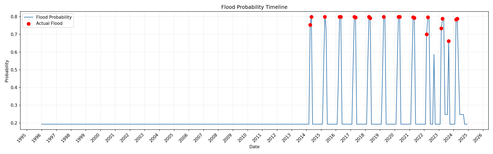
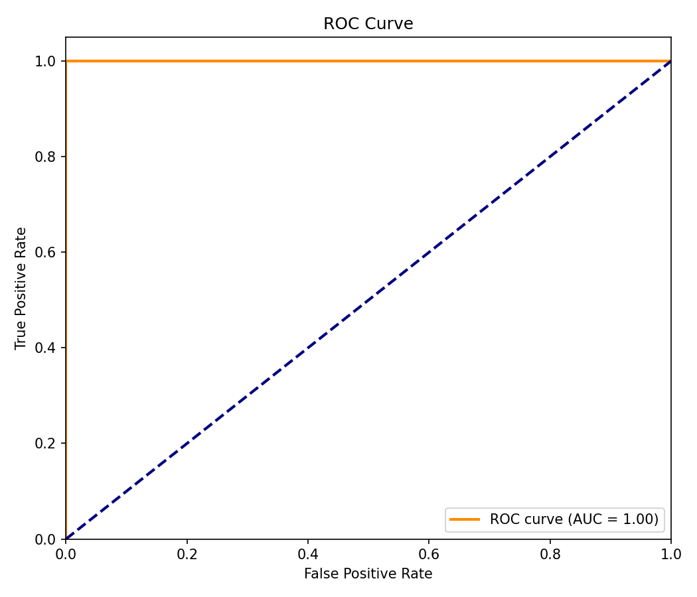

Tasqyn forecasts the monthly probability of flooding for snowmelt-driven rivers — turning 30 years of data and live weather into an early warning that ordinary people can act on.
The Ishim (Esil) and neighbouring rivers flood almost every spring as the winter snowpack melts, displacing thousands and causing major damage across Northern Kazakhstan — the 2024 floods were among the worst in decades. Communities need lead time, not hindsight.
Flood timing is set months ahead by how much snow fell over winter — a signal that already exists before the danger arrives.
Official alerts often arrive only as water rises. A month of lead time changes what families and emergency services can do.
Tasqyn exists to put a clear, honest risk number in the hands of the people who live along these rivers.
A naive split scores a suspicious ROC-AUC of 1.00. We treat that as a red flag, not a result — and report leave-one-year-out walk-forward numbers, where the model is retrained for every test year and never sees the future.
12 test months, 2 events. Statistically meaningless — kept only as a teaching example.
Leave-one-year-out over 2018–2024. The number we actually stand behind.


With no hand-coded hydrology, the model learned that the strongest predictor of a spring flood is the snow that fell four months earlier. That's the documented snowmelt mechanism — strong evidence it captured real cause, not noise.
Tasqyn pulls live ERA5 weather from the free Open-Meteo archive (no API key) and forecasts the coming months for six basins. Because winter snow is already observed, the look-ahead leans on data that already exists.
A risk map of every basin, per-basin forecast with a confidence interval, push alerts for high risk, history and an offline mode. Everything you see comes straight from the model through the API.
Calibrated probabilities, confidence intervals, and an out-of-distribution guard are part of the contract — not an afterthought.
Isotonic calibration fit on out-of-sample scores — a calibrated 70% means floods roughly 70% of the time.
A 15-model bootstrap ensemble gives a 90% prediction interval on every forecast.
If live inputs fall outside the training range, or a basin is scored by transfer, the forecast is flagged indicative.
Leakage-aware features, a stable serving façade, 23 passing tests, ruff-clean, containerised and CI-checked.